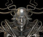
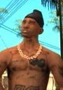
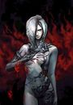

De: La Frikipedia, la enciclopedia extremadamente seria.
De: La Frikipedia, la enciclopedia extremadamente seria. De: La Frikipedia, la enciclopedia extremadamente seria.
Los fenicios eran una nación que pretende combatir el malvado plan de los chinos de destruir los Todo a Cien. Para ello le pidieron ayuda a Satán, quien les ha ordenado que manden a sus hijos primogénitos al Seminario para que sean curas.
Los fenicios nacieron en Líbano, pero como allí las chicas no se dejaban bigote comenzaron a visitar países lejanos para ver si las encontraban, cosa que lograron al llegar a Portugal. Tras un tiempo allí les gustó tanto el vellamen que querían más, así que siguieron subiendo Europa arriba, pasando por Inglaterra (donde se dejaban los pelos de las piernas) y llegaron hasta Suecia (donde se dejaban todo el combo: bigote, piernas y espalda).
Pero los israelitas comenzaron a construir poblaciones por todo el río Jordán y llenándolos de judíos armados y obsesionados por tener sólo vecinos con el cipote cortadito, así que los fenicios tuvieron que emigrar antes de que el rey David les cortase el pito, y formaron una ciudad en Túnez. Ahí digievolucionaron en simpáticos cartaginenses y nombraron a una mujer como presidente (reina Dido) porque eran todos del PSOE. Pero enfrente los romanos comenzaron a metérseles en el negocio e incordiaban con su invento nacional (La Mafia, coaccionando a todos los Todo a Cien para que les comprasen a ellos y no a los fenicios) así que al final acabaron peleándose en la Segunda Guerra Mundial (época durante la cual los romanos llegaron a Hispania y sodomizaron a Numancia y a Viriato) y al final perdieron los fenicios.
Cuando declararon la guerra a los romanos, los fenicios no sabían que estaban aliados con los celtas. Por eso ellos seguían fumando celtas y esnifaban Colacao. Eso provocó serias epidemias entre sus filas. Pidiendo ayuda a los gobiernos de Numancia, Sagunto y Brigantia (éstos dos últimos pasaron de ellos), así que los romanos destruyeron Numancia. Los fenicios se quedaron solos en el mundo y como nadie quería joder con ellos pues se extinguieron.
Los fenicios habían aprendido de los sumerios a escribir y como querían salvar a todo el mundo de los chinos enseñaron a todo el mundo que conocían a escribir y leer. Y escribían así:
"wylk rbm ʾdnbʿl bn grskn hrb wḥmlkt bn ḥnʾ hrb ʿlš wtmk hmt ʾytʾgrgnt wšt h[m]t šlm dl bʿl nws".
"Mañana levántate temprano que vamos a venir a llevarte el ganado, el oro y las pivas. A cambio te daremos una tele de 10 pulgadas".
Todo lo que escribían los fenicios eran libros de cuentas, facturas, Declaraciones de Hacienda, pornografía osezna...
Los fenicios tenían cientos de árboles que no daban fruta, así que los cogieron e hicieron lápices de cedro con ellos para poder echarse al Mediterráneo y poder vivir tranquilos sin que sus vecinos intentasen rebanarles partes del pito.
Así los fenicios fueron los primeros en hacer turismo, y pasarles la manía a los ingleses (a los que también pasaron otras costumbres raritas). Para poder llegar rápido y sin problemas entre la tripulación solo contrataban a hombres (nada de mujeres y heteros).
Los barcos fenicios eran barquitas con motor fuera de borda y 800 CV, así que podían ir muy cargados, antes de salir a salvar el mundo de los chinos. Eso sí, antes de partir solían sacrificar un par de niños en honor a BaalZbub.
La religión fenicia es una de las más complicadas de toda la historia del comercio. El principio de los tiempos, según los fenicios, ocurrió cuando el dios Baal se independizó de casa de sus padres y se fue a buscar la vida más allá de las puertas de Tannhauser. Aquí tienen la lista de todos los dioses fenicios:
| Imagen | Nombre | Atributos | Castigo |
|---|---|---|---|
|  | Baal (amigo de Satán y beelzebub) |
El dios de la tormenta, lluvia, ríos... | Si no le adoras te convertirás al Islam. |
|  | Moloch ("Moloni" para los italianos) |
Es el dios del trabajo capitalista. | Si le adoras debes ofrecer en sacrificio a tu hijo primogénito pa kemarlo dentro de una estatua. |
| Amón ("Jamón" para los esepapañoles) |
Es el dios del jamón y de las personas que se llaman Ramón, se lo copiaron a los egipcios. | Si no adoras a los jamones, te faltarán buenas jamonas para... | |

|
Tanit (La "señora" para todos) |
Es la única que manda y todos obedecen. | Si no eres lesbiana o heavy, ya puedes echar a correr, un grupo de feministas va a por ti. |

|
Astarté ("Aria Giovanni" para los salidos) |
Diosa de la fecundidad, del sexo vamos, pero con niñ@s. | Si no eres un salido, no podrás entrar en su |
|  | Melqart (Melki pa los judíos) |
Es la diosa de las bombillas, farolas, hogueras... | Si no eres un iluminado los islamistas, testigos de Jehová, evangélicos y demás irán a por ti. |
Autor(es):